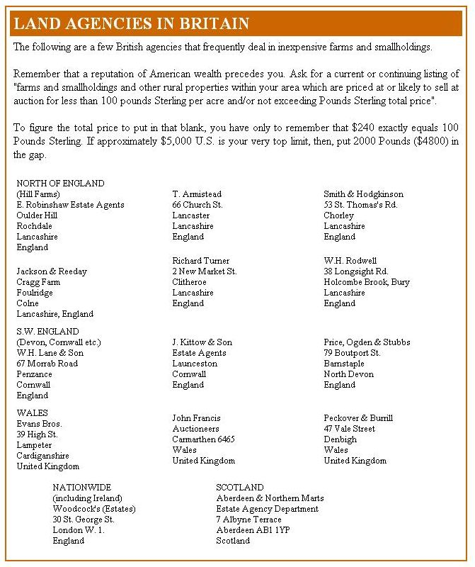
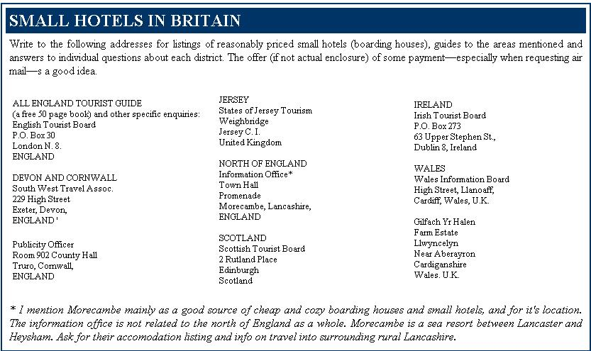

A. The foothills of the Knockmealdown mountains, one of the best inland spots in Ireland to seek inexpensive land and established farms.
B. Lough Erne, strewn with uninhabited islands.
C. The Western Isles of Scotland, another happy hunting ground for island buffs.
D. East coast Scotland south of Aberdeen, a good source of inexpensive mainland properties.
E. A vast area of near-to-nil population.
F. The twin towns of Lancaster and Morecambe. Lancaster is on the road and rail routes to just about everywhere and is particularly useful as a jumping-off point for the Lake District. Inexpensive hotels and apartments are abundant in Morecambe and Heysham, a few minutes south, is the ferry departure point for Ireland.
G. The northern and southern limits of "Mid Wales", an area isolated from the resort development of the north and the industrial development of the south.
H. The region in which most of England's inexpensive hill farms are located. It centers on an area not usually marked on maps known as the Rossendale Valley.
I. The beautiful Devon and Cornwall area, somewhat isolated from the mainstreams of commercial farming.
J. Weymouth, the departure port for Jersey and the other 'Channel Islands'.
K. Jersey, the largest of the Channel Islands and the closest to France.
The distant and foreign acreages of Alaska and Canada have received a lot of coverage in the American back-to-the-land journals and even Australia and New Zealand are now being mentioned. But the British Isles have so far been left out of this English-language grouping . . . understandably but mistakenly. For, while Britain has no "free" lands or acreages open to homesteading, the United Kingdom does offer opportunities for the purchase and rental of small and inexpensive farms.
England, Wales, Scotland and Ireland are often represented as terribly overcrowded countries where open stretches of territory no longer remain. In fact, the British Isles have many such uncluttered landscapes.
For example, 2,250,000 acres sown to wheat; 18,000,000 acres in arable production; 12,000,000 head of grazing cattle . . . are figures for where? Canada? The U.S.? Not at all. These are recent figures for England, Wales and Scotland . . . the totals for Ireland not included. To complete the "wide, open spaces" concept, we would have to add in even larger national park and wilderness areas.
In short, Ireland, Scotland and Wales are densely populated in only a very few of their thousands of square miles. Even in England, there are major stretches of low-population country to the southwest of Bristol and north of Manchester.
Hill farms, mainly suited to beef and sheep, situated in Wales and the north of England may presently be purchased outright for between $100 and $150 U.S. per acre. (To make it easy for most readers of this publication, all prices are quoted here in U.S. dollars.)
Mind now, this $100 to $150 price per acre buys substantial buildings and land that is already in production. Farm valuations in these areas rarely take any account of the farmhouse or livestock accomodations. Sales are on purely a "per acre" basis with fixtures "thrown in". Wooden buildings are uncommon and house, haybarn, cowshed, etc. are usually walled with local stone and roofed with blue slate. I'll wager that even "free" homestead land in Canada and the U.S. cannot be cultivated and built on for less.
The typical hill farm-perhaps built in the 1700's and certainly not much beyond 1800-might appear more historic and beautiful than useful and pleasant to live in. Several farms and country houses are, in fact, designated "historic monuments" while being operated by quite ordinary people in quite ordinary ways. The houses, however, have modernized-but still cozy-interiors and the outbuildings are updated and businesslike behind their castle-like doors. There are few derelict farms in Britain. Those for sale are either kept in use until sold or have been only recently vacated.
Hill farm pastures-fenced by ancient, dry stone walls--are sometimes quite steep but each property usually has a few acres of good bottom land that is worked as a hay meadow. In addition, many hill farms are situated on the edge of vast, publicly-owned moorlands and are sold with the rights to free range cattle or sheep on the moor.
Livestock markets, feed suppliers, country schools and friendly shops and pubs are never too far down the road from British farms. The country homes are castle-like in more ways than one, however, and isolation is available in any degree desired. You may pick your estate so that the nearest town or village is completely out of sight . . . or part of a panoramic, almost bird's eye view from the farm house.
The relative unpopularity (and resulting low cost) of the hill farm is based on: (a) the higher productivity of the best land in the valleys and its ready adaptability to modern, intensive farming methods, (b) the so-called "shorter summer, longer winter" climate of the winter-shadowed hill farm and (c) a general dislike of living and working up and down a windy hillside. On the other hand, of course, many people are able to see advantages in the hill farm's characteristics.
By the way, misconceptions about British weather seem to be as widespread as those concerning open space in the United Kingdom and a word is in order:
Summers in the British Isles better those of western Canada where so many back-to-the-land folk are flocking nowadays. Winters better those of all the United States save southern California, Florida and the lower third of Texas. The British climate, in other words, lacks extremes and the United Kingdom is almost ideal for year-round habitation.
Granted that timing a vacation (when you have only two weeks to soak up a year's worth of sun) can be a gamble in the British Isles. Still for comfortable living, working and farming . . . the climate is second to none. Remember that 2,250,000 acres of wheat ripen annually in Britain and many more acres of hay are harvested. Both crops are difficult or impossible to produce in much of British Columbia and other areas being considered by back-to-the-land people:
For that matter, you can pick and choose your climate to a certain extent in the British Isles. Consider, for instance, the Island of Jersey. Jersey is part of Britain but closer to France than England. It's a remarkably beautiful spot and the island's long sunny summer and early spring makes Jersey the "California of England" . . . or, as Jersey P.R. men say, "Britain's South Sea Isle".
On the British mainland, the very best summer and winter weather is enjoyed southwest of Bristol in the Devon and Cornwall district. The land is flat-ish and the area somewhat isolated (a Birmingham farmer sits at the center of a web of national highways but roads in Cornwall lead only to Cornwall). Due to this relative isolation, land prices in the region are low and $200 per acre will still buy a farm complete with house and attractive stone outbuildings.
The land bargains in Devon and Cornwall may soon be eaten away by somewhat more inflated "country retreat" prices since the area is one of outstanding beauty. As it is, a property of under 50 acres is usually priced with more emphasis placed on the house and buildings . . . but the per-acre cost of a larger farm doesn't really seem to take the structures into account at all. The larger the farm, the better the buy, in other words.
This rule of economics does not seem to prevail in Scotland and Ireland . . . probably because there are few large farms in either country. Instead, both Scotland and Ireland have a strong tradition of very small farms akin to the U.S. concept of the homestead. In Scotland these small land holdings are known as "crofts" and their inhabitants as "crofters". Prices under $150 per acre are common in both countries.
Scotland suffers a more extreme winter than does the rest of the British Isles . . . without the advantage of a sympathetically balanced summer climate. Ireland's emerald greenery, meanwhile, owes as much to a high rainfall as it does to fertile soil. Both countries, however, have charms, lifestyles and-indeed-people which differ greatly from those of England and Wales. These are generally considered to be more than adequate compensation for the less clement weather.
Island and total isolation buffs will find rich pickings in both Scotland and Ireland. The coastline of Scotland is fragmented in many stretches into chains of wild and beautiful islands whose links with "civilization" are tending to diminish, rather than increase. Try getting to Eriskay or Mingulay in a hurry and you'll see what I mean.
There are seals, otters, red deer, golden eagles and rare seabirds here. Time passes slowly. It was only yesterday that the Norsemen left . . . only yesterday that Jacobite Charlie was hunted from cave to cave. Gaelic is still spoken, peat still burnt. Women weave tweed, shepherds walk the hills and poachers still net the lauds' salmon.
To learn more about these islands or to rent a fisherman's boat or farm cottage on one of the isles, write:
The Highlands & Islands Development Board
Via The S.T.B. 2 Rutland Place
Edinburgh, SCOTLAND
Over in the west of northern Ireland, there's a county named Fermanagh . . . and in Fermanagh there aren't many people, so they use up the land by planting forests. There's also a 300-mile square lake in Fermanagh called Lough Erne, on which you can sail for hours and hardly see another boat. The waters are full of salmon and trout that never know a hook from one year to the next and there are about two hundred uninhabited islands in the Lough. Nevertheless, the area is only two hours by road from Belfast (where the ferry from Heysham makes a connection to England). To ask about the Lough Erne Islands, write:
N.I.T.B. Royal Avenue,
Belfast BTI IDQ
Northern, IRELAND
Although the standard of living in the British Isles is close to that enjoyed in the United States and Canada, wages and prices are each about 50% less than those operating in North America. This means that any U.S. and Canadian dollars taken to Britain are at least doubled-and often trebled-in spending power.
Outside London you'll find room and breakfast for $2.00 U.S. per day and $3.00 to $4.00 will buy you a room with all meals . . . less by the week in both cases. Other typical prices include: fish and chips sit-down dinner, 45 cents; movie theater, 40 to 60 cents; natural brew beer, 25 cents per Imperial pint (larger than a U.S. pint); tomatoes, 10 to 15 cents a pound; sprouts, 9 to 12 cents a pound; potatoes, 3 to 6 cents per pound; 25 to 50 cents a pound for fresh caught fish; ground steak, 25 to 35 cents a pound; 45 to 50 cents a pound for mushrooms; milk (fresh, farm bottled and delivered), 12 to 15 cents per Imperial quart. Mind now, these are normal prices. Every nation has it's "bargain basement" if you stay long enough to find it.
Certain items do cost more in the United Kingdom, due to an especially high purchase tax. Liquor, cigarettes, vehicle fuels and automobiles are among these exceptions but, fortunately, farm fuels are untaxed and-therefore-very inexpensive indeed. "Commercially applicable" vehicles such as trucks, vans and pickups also escape purchase tax which-in any case-is not applied to second-hand vehicles of any description. For the record: cigarettes start at around 40 cents a pack and go as high as 60 cents for the longest and fattest. Whisky, gin and vodka sell at $5.00 a bottle and around 30 cents a drink over the bar.
Still and al-even in town-two people can live in the British Isles on $25 a week without being miserable shut-ins. Many a working man with a large family manages happily enough on only twice that amount. A farmer may transcend all this, of course, and simply set his production to the income he requires. Markets for produce are close at hand, earnings spend more slowly and-as elsewhere-a vegetable garden, dairy goats, hens, rabbits and other produce can go a long way in making the homesteader self sufficient and largely independent of the need for a cash income.
For those who do want a moderate income from the land in Britain, without getting into all-out farming, a simple cattle rearing program based on grazing and winter hay maintenance feeding might be the best bet. Spring-purchased, 4-month-old dairy calves can be bought for $60-$80 and are readily saleable for $120-$175 as "bulling heifers" the following spring. A similar market (at prices 10 to 20% higher) exists for beeftype bullocks or steers. Such feeder operations require little more skill than attention to summer fencing and winter stall cleaning and bedding. All the hay-making machinery may be hired (with operators) for a total final cost of 10 cents per 60-pound bale. Excess hay may be sold at 60 cents per bale during an average summer and that price often doubles towards the end of a long winter.
Using a stocking rate of one head of young stock per acre for an average hill farm, it is possible to roughly calculate the necessary investment you must make for a particular future income. Using U.S. prices to cost other needs will guarantee a wide-and advisablesafety margin.
For an idea of what Britain's press has to say about the farming scene there, try:
FARMER'S WEEKLY, Agricultural Press Ltd., 161 Fleet Street, London EC4, England. This magazine is full of farms, livestock and sundry equipment for sale. It also contains features and news stories that describe one innovative technique or another that an individual (or, perhaps, eccentric) is using which otherwise might never be heard of outside his' own area. The publication also runs a free information service in its 100 MOTHER-size weekly pages. The price in Britain is 24 cents anti a dollar should bring a single copy airmail or several (6 to 8) by sea
FARMER'S GUARDIAN, 127 Fishergate, Preston, Lancashire, England has a similar format but is a week ly tabloid newspaper of 20-25 pages published in the north of England. It's price is a fantastic bargain at only 9 cents a copy in England. Again, one dollar should bring a sample or two by air or at least a five week subscription by surface.
It's also possible to subscribe to, receive samples of or get a description of all farming and gardening periodicals published in England (or throughout the world, for that matter) from:
Blackwell's
Broad Street
Oxford, ENGLAND
Blackwell's will also supply their catalog (894) of British farming books which are much less expensive direct than from U.S. sources. Organic Farming, by H. Coney-to cite one example-is listed at only $2.16.
Going back to the land in Britain offers many fringe benefits, some of which should be at least briefly mentioned here. First and foremost, of course, is the lifestyle . . , at once both more relaxed and civilized than the degrading "rat race" now so prevalent in North America.
The cities and towns of Britain were, for the most part. established long before the age of urban sprawl and highway strip building. As a result, the populations of cities which take up whole counties in the United States are snugly accomodated by much smaller areas in the United Kingdom and, today, outward "development" of cities is limited by strict land-use laws.
Both radio and television are much more pleasant to an adult in Great Britain and tuning in is an alternative life style by itself. I wish everyone who is even remotely interested in Britain would read a copy of the BBC's weekly guide, Radio Times. It's available by air for $1.00 from:
BBC Publications
35 Marylebone High Street
London, ENGLAND
BBC radio has four channels: (I) Pop and jazz; (2) Light music, plays, magazines, live comedy, variety; (3) Up, up and away highbrow; (4) News, documentaries, plays, education courses, light to heavyweight music.
The standard of British television journalism ensures that Meet The Press and the Cronkite News would be booed off the air if shown across the water. In fact, in 1969 two American-made "adult" drama series were dropped by BBC TV after only a few showings due to the volume of critical mail from 8 to 11-year-old children! Most of the 75% of British TV fare which is not imported or awful movies is simply of a quality which cannot successfully be communicated to residents of the U.S. Suffice it to say that British television-with two commercial-free BBC channels and one commercial channel-has embraced ALL the freedoms of the new theater, underground film, the impish and ravaging debates of Parliament and British journalism.
The British airwaves were made even more attractive just before the last national elections when the Socialist Labor Party inaugurated a "University of the Air", now broadcast over both TV and radio. Anyone, including tourists and visitors, can enroll and-apart from a two-week "summing up" session at an actual university-whole courses in a full range of subjects can be taken via a radio and a television set. The program is not quite free (although the lectures are, of course). There's a nominal enrollment fee to cover correspondence course mailings and a few books and "Open U" publications to buy . . . but you certainly receive a great deal for that small investment. For further details (enclose a dollar if you expect a weighty reply), write:
National Extension College
8 Shaftesbury Road
Cambridge, ENGLAND
In the field of "ordinary" education and child care, the British government provides pre-school schools for the children of working mothers; milk, vitamins, juice, etc. for preschool children; and free education all the way up.
A back- to-the-lander will enjoy still other "extras" of the Good Life in Britain. Consider medical care: to an Englishman, medical treatment of all kinds is a constitutional right. The idea that it be withheld from-or not sought by-those unable to afford it seems criminally wrong. Throughout the British Isles, all the following benefits and services are free of charge, regardless of income (many are also available, as a courtesy, to foreign visitors): treatment or visits from a physician; prescribed medications; hospitalization with any and all treat ment given; all aspects of maternity care, including at-home and hospital births; prenatal and antenatal clinics.
Perhaps I should stress that it is never compulsory (as many Americans presume) for a citizen to accept whatever the state provides in the British Isles. The alternative of purchasing the service or substituting another on your own is always there.
And still more possibilities for Good Living in the United Kingdom: farm houses (redundant after farm amalgamations) for rent at $11 per week; town houses WITHOUT land, selling outright at $1500 (no "O's" left off there!); live-in-and-help-crew motor yacht cruises on the Thames and English Channel at $30 weekly and less, all inclusive.
There are many more such gains and very few regretable losses to take into account. In short, I think a North American looking for an easier pace and simpler living will find Britain similar enough to "home" to minimize losses in transit but different enough to overcompensate in gains. No one-least of all the British-calls the United Kingdom of England, Scotland, Wales and Northern Ireland perfect. But perhaps, like democracy, the U.K. is "the least bad" of a kind.
Entry into Britain is granted on a temporary (tourist) basis quite simply at the port of entry. Length of stay stamped into your passport is based on: (a) your own requirements and (b) the money you say you have available to you while in the country. When funds are low and you want to stay long, you should explain that (1) you will have no hotel bills because you will be staying with friends or relatives [ have an address handy] or (2) your family will be sending you money on a regular basis.
Later applications to remain and become employed are not so readily approved. A visitor may renew a temporary visa almost indefinitely, however, and summer employment in England is OK with the immigration officers. And, of course, a self-supporting land-owner may change from tourist renewal to permanent resident status with relative ease.
Conditions on the Island of Jersey are even better. There, employment in hotels and in agriculture may be obtained without the documents and other red tape required in the rest of the British Isles. In fact, there are no passport formalities of any kind at the end of the $10 ferry ride from Weymouth on the south coast of England.
Maybe Jersey-with its sunny clime, remarkable beauty. great number of gentle cattle which bear its name and all-around lack of formalities-is the best introduction of all for any North American interested in going back to the land in Britain. In my mind, however, the whole U.K. offers almost ideal opportunities for "modern homesteading". Come on over and see for yourself.
TRANSPORTATION TO BRITAIN
Getting to Great Britain is, not the expensive proposition you may have thought. A round-trip air ticket to London can be purchased for only $150 and internal travel is quite reasonable, even without using the "runabout" bus and rail tickets available to tourists at token fees. And, of course, the faithful thumb remains a legal and successful way of getting about in the U.K.
The following agencies sell charter flights ($150 roundtrip from the eastern United States). Other agents may be found in the advertising columns of the LONDON SUNDAY TIMES, sold at least on one newstand in every major North American city.
Pan Europa Tours *
25 Bloomsbury Way
LONDON W.C. 1
The Trans American Society
36 Dumbarton Road
London S.W. 2
Charter Flights Unlimited **
1490 West Broadway
Vancouver 9
British Columbia
The single disadvantage of these "club flights" is the necessity of having one's name listed for five or six months before departure. Once your name is down, however, it's possible to book a seat on a particular flight without further wait.
The ships of the HEAD & LORD LINE, 26 Beaver St., New York, New York, regularly sail for Ireland and Scotland from the east coast of Canada and the United States. The trip across takes nine days so the $150 fare-including as it does, better than a week of first class British hotel service-is reasonable indeed.
Sea travel has the additional advantage of allowing large amounts of baggage at no charge. Head and Lord will even ferry a car across the Atlantic for you and, since British auto makers offer their products at very reduced prices to foreign visitors, you can always bring a bargain automobile back to these shores if you decide not to homestead in the U.K. Get full details on car purchase from:
British Travel Association
612 South Flower
Los Angeles, California
If you fly into London (as many of today's tourists do), you'll find fast, direct train service to: (a) Manchester, which is 15 miles south of the best area for inexpensive English hill farms. (b) Lancaster, which is 15 miles north of the same area and only minutes from Heysham and its daily $5.00 ferry to Ireland. Lancaster is also on the main road and rail route to Scotland and is the departure point for the nearby "lake district" and a massive farming region south of Scotland's border. (c) Liverpool, about halfway between the hill farms of both northern England and Wales.
And while we're on the subject of transportation: the most beautiful vacation in the world would have to be roaming free the country lanes of Ireland at the reins of a horse-drawn Gypsy caravan (wagon). The van sleeps four and the hire-which includes oats for the horse and a list of farmers who provide overnight parking and grazing-is only $50. Non-believers should write:
The Irish Tourist Board
150 New Bond Street
London W. 1., ENGLAND
*Pan Europa also offers inexpensive sea crossings.
**Charter Flights makes west coast departures.
|
 |
 |
|